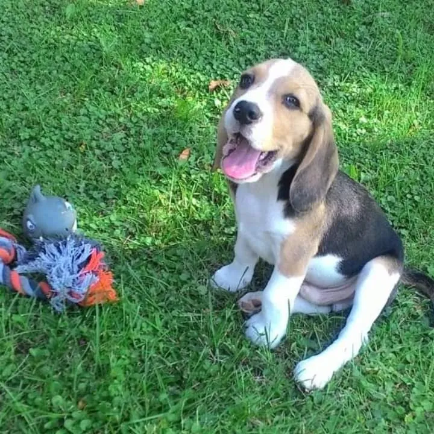
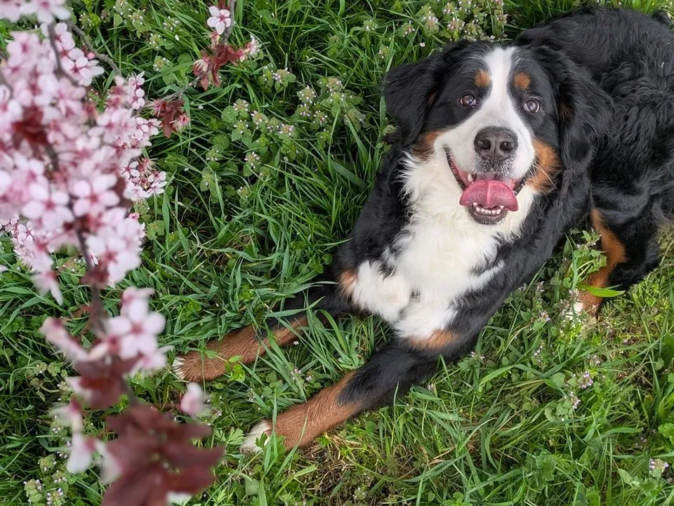

Servizi di educazione canina e sport cinofilo a Piacenza
Dal cucciolo all'atleta a quattro zampe: a Podenzano (Piacenza) accompagniamo ogni binomio con percorsi su misura e metodi rispettosi. Qui trovi tutte le aree di lavoro — scegli quella più vicina alla tua situazione.
Scegli il bisogno più vicino alla tua situazione
Quattro grandi aree per orientarti subito.
quattro punti di partenza, uno è il tuo

Ho un cucciolo
Puppy training, socializzazione e prime regole per partire con il piede giusto.
Scopri il percorso cuccioli
Migliorare la convivenza
Richiamo, guinzaglio e autocontrollo per una vita quotidiana più serena.
Vedi educazione di base
Fare sport col cane
Obedience, ricerca, tartufi e brevetti per divertirvi e crescere insieme.
Scopri gli sport cinofili
Supporto specifico
Consulenze pre-affido, cani con difficoltà e ginnastica propriocettiva.
Richiedi una consulenzaTutti i servizi FullOfJoy
Ogni attività ha la sua pagina: scegli quella che ti somiglia.
Cuccioli
Educazione e convivenza
Sport cinofili
Brevetti
Supporto specifico
Raccontaci il tuo cane: ti aiutiamo a capire da dove iniziare
Cucciolo, guinzaglio, richiamo, socializzazione o sport cinofilo: partiamo da una valutazione iniziale.